많이 찾는 제품
구매 안내
1. 수작업 제품 특성 안내
loamo의 모든 도자 제품은 수작업 공정을 통해 제작됩니다.
이 과정에서 아래와 같은 자연스러운 현상이 나타날 수있습니다.
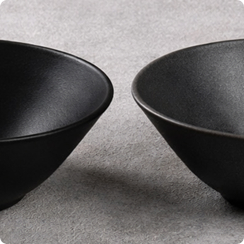
가마 소성에 따른 색감 차이
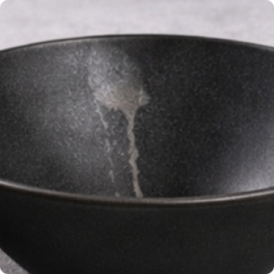
유약 흐름 자국
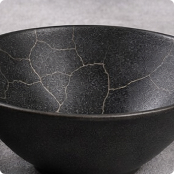
유약 특성에 따른 크랙 현상

미세한 핀홀 및 기포 자국
2. 사용시 주의사항
모든 그릇은 전자레인지, 오븐, 식기세척기에 넣지 말아주세요. 도자기 특성상 충격을 가할 경우 파손의 우려가 있습니다.
수작업 도자기인 로아모 그릇의 특성 상, 수축률 차이가 있어 같은 디자인이라도 형태와 크기가 조금씩 다를 수 있습니다.
상세 페이지에 명시된 구매 전 유의사항/상세설명을 읽지 않아 발생한 모든 상황에 대해서는 책임지지 않습니다.
개봉 후 조리 및 세척 등의 사용의 흔적이 있거나 사용자의 부주의로 인한 파손은 교환 및 반품의 사유가 되지 않습니다. 사용 전 주의사항을 반드시 확인하시기 바랍니다.
리뷰
생각보다 더 고급스러운 블랙 컬러라 놀랐어요!!
-
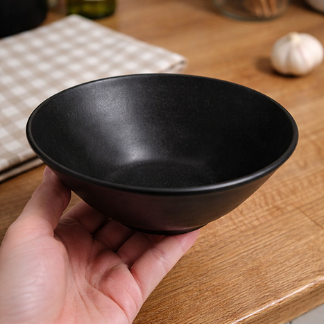
-
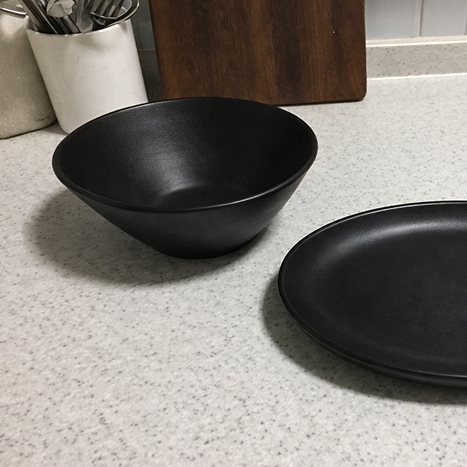
-
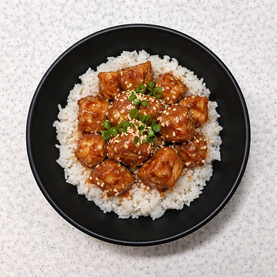
매트하면서도 은은한 질감이라 음식이 훨씬 정갈해 보입니다. 어떤 음식을 담아도 색대비가 예쁘게 올라와요. 무게감도 적당해서 사용감이 안정적이고, 손에 닿는 촉감도 좋아요. 매일 사용하는 그릇인데도 쓸 때마다 기분이 좋아지는 제품이에요.
어떤 테이블에도 잘 어울립니다.
-
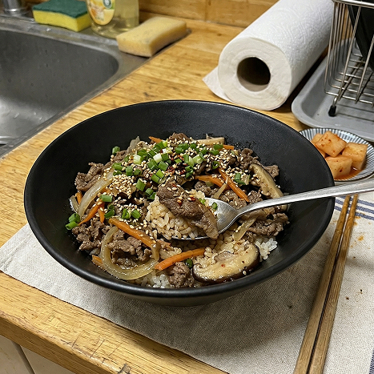
-
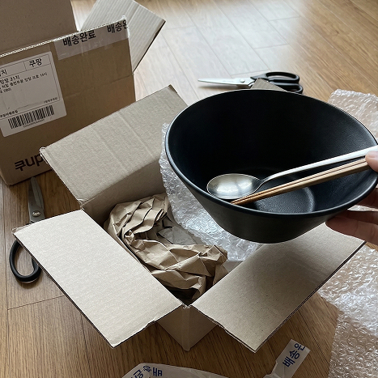
-
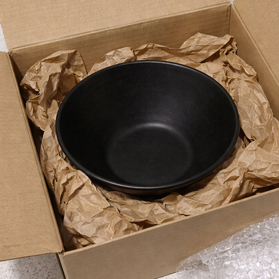
깊이감이 있어서 국물 요리나 덮밥 담기에도 활용도가 높아요. 유약 마감이 균일하지 않은 부분이 있는데 오히려 수작업 느낌이라 괜찮았어요. 세척도 편하고 물자국이 크게 남지 않아 관리가 쉬운 편입니다. 심플하면서도 존재감 있는 그릇 찾는 분들께 추천해요.
사진보다 실제가 훨씬 더 분위기 있는 제품이에요.
-
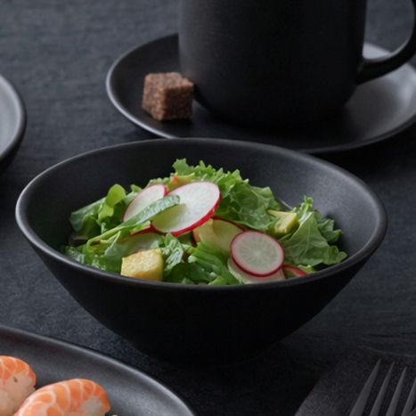
-
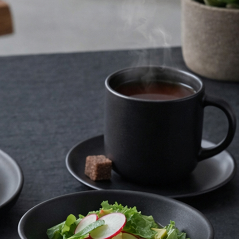
-
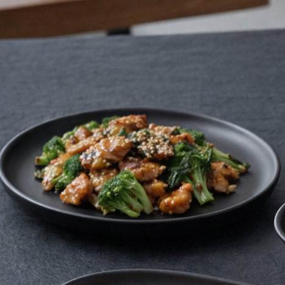
빛에 따라 미묘하게 달라지는 블랙 컬러가 정말 매력적입니다. 테이블에 올려두면 음식이 아니라 그릇 자체가 포인트가 돼요. 가벼운 브런치부터 한식까지 다양하게 잘 어울려서 활용도가 높습니다. 같은 라인으로 몇 개 더 구매하고 싶을 정도로 만족스러워요.